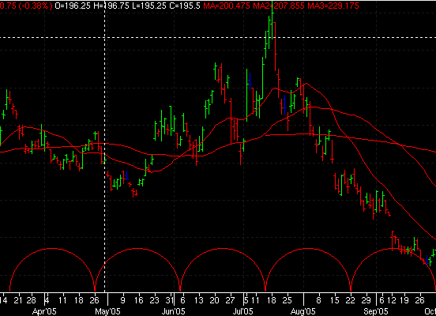
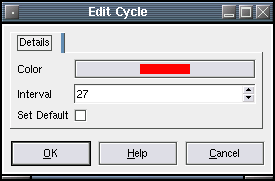

Cycle
Description:
A series of arcs spaced at regular intervals across a chart. Commonly used to indicate a repeating pattern.
To create a Cycle, select draw mode from the main toolbar and right click with the mouse on the chart you wish to apply it to. Select "New Chart Object" from the popup menu and select Cycle from the menu.
After selecting the menu option, the mouse
pointer will change
to a hand pointer. To place the Cycle on the chart the user must
click the left mouse button on the point in which the users wants the
cycle to start at. The object
will then appear on the chart in a default spacing.
Selecting:
In order to edit the Cycle, the user must first select it. First, the user must be in draw mode. Select the Cycle by left clicking with the mouse at any point where the cycle ends/starts where the cycle just touches the bottom of the chart. The object will be selected when the "grab boxes" appearsYou then can right click the mouse for a context menu for the object. You may also double-left click on the object to bring up the edit dialog directly. There are three options when a Cycle is selected. Edit, Move and Delete.
Edit:
The Cycle settings are defined as follows:
- Color - The color of the cycle.
- Interval - The number of bars between each arc.
- Set Default - If checked, any new Cycle will use the current
settings as the default.

Move:
To drag the Cycle across the chart, click the left mouse button on the first "grab box". The Cycle will then follow the mouse pointer. To drop the Cycle, click the left mouse button.To adjust the bar spacing between each arc, click the left mouse button on the second "grab box". The Cycle will then resize itself as you move the mouse pointer. To drop the Cycle, click the left mouse button.